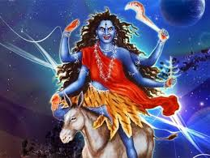

Durga Puja
Day 7

Kalaratri (sometimes spelled Kaalratri) is the seventh of the nine forms of the Goddess Durga, known as the Navadurga.
She is first referenced in the Durga Saptashati, Chapters 81-93 of the Markandeya Purana, the earliest known literature
on the Goddess Durga. Kalaratri is widely regarded as one of the many destructive forms of the Mother Goddess, which include Kali,
Mahakali, Bhadrakali, Bhairavi, Mrityu, Rudrani, Chamunda, Chandi and Durga.
Affiliation: Avatar of Parvati
Planet: Saturn
Mantra: एकवेणी जपाकर्णपूरा नग्ना खरास्थिता लंंबोष्टी कर्णिकाकर्णी तैलाभ्यक्तशरीरिणी। वामपादोल्लसल्लोहलताकंठकभूषणा वर्धनमूर्धध्वजा कृष्णा कालरात्रिर्भयंकरी।।
Weapon: hooked vajra and curved sword, Abhayamudra, Varadamudra
Mount: Donkey, Lion or Tiger
Consort: Shiva